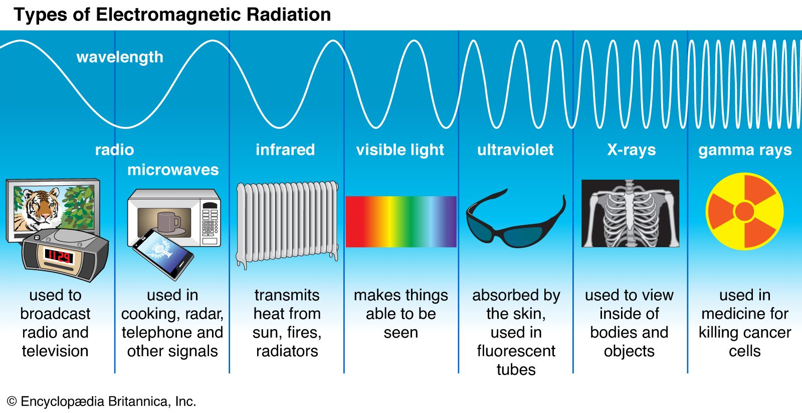
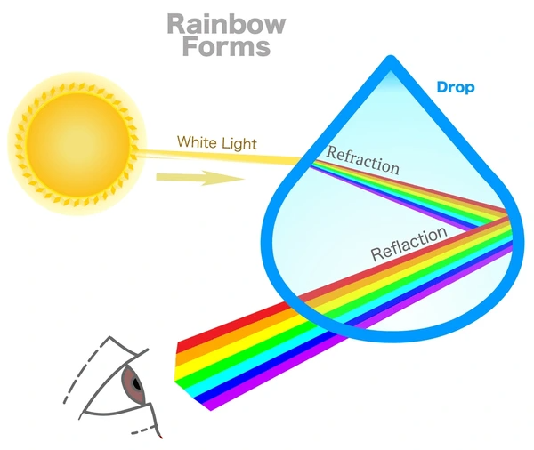
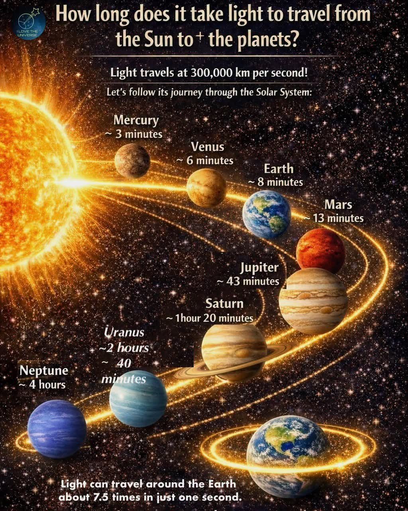

Wavelength
ஒரு ஒளி அலையின் தொடர்ச்சியான இரண்டு ஒத்த புள்ளிகளுக்கிடையிலான தூரமே wavelength எனப்படும்.
அலைநீளம்
நாம் பார்க்கும் உலகத்தை உருவாக்குவதில் ஒளி மிக முக்கியமான பங்கு வகிக்கிறது. சூரியனிலிருந்து பூமி வரை பயணிக்கும் ஒளியிலிருந்து தொலைதூர விண்மீன்களின் தகவல்களை நமக்கு கொண்டு வரும் starlight வரை — ஒளி பிரபஞ்சத்தை புரிந்துகொள்ளும் ஒரு முக்கியமான வழியாகும்.

ஒளியைப் பற்றி அறியும்போது wavelength, frequency மற்றும் electromagnetic spectrum ஆகியவை அடிப்படை கருத்துகளாகும்.
ஒரு ஒளி அலையின் தொடர்ச்சியான இரண்டு ஒத்த புள்ளிகளுக்கிடையிலான தூரமே wavelength எனப்படும்.
ஒரு குறிப்பிட்ட நேரத்தில் எத்தனை அலைச் சுழற்சிகள் நடைபெறுகின்றன என்பதைக் frequency குறிக்கிறது.
Radio waves முதல் gamma rays வரை அனைத்து electromagnetic radiation-களின் பரந்த தொகுப்பே electromagnetic spectrum.
மனிதக் கண்கள் electromagnetic spectrum-ன் ஒரு சிறிய பகுதியை மட்டுமே — visible light — நேரடியாகக் காண முடியும்.
ஒளி வெவ்வேறு ஊடகங்களின் வழியாக செல்லும்போது அதன் பாதை மற்றும் வேகம் மாறக்கூடும். Reflection மற்றும் Refraction இதைப் புரிந்துகொள்ள உதவும் முக்கிய நிகழ்வுகள்.

ஒளி ஒரு மேற்பரப்பைத் தாக்கும்போது அதன் ஒரு பகுதி மீண்டும் திரும்பிச் செல்லும் நிகழ்வு Reflection எனப்படுகிறது.
ஒளி ஒரு ஊடகத்திலிருந்து மற்றொரு ஊடகத்திற்குச் செல்லும்போது அதன் வேகம் மாறுவதால் அதன் பாதையும் வளைந்து மாறலாம்.
வெற்றிடத்தில் ஒளியின் வேகம் சுமார் 299,792 கிலோமீட்டர் ஒரு வினாடிக்கு.
வெற்றிடத்தில் electromagnetic radiation அனைத்தும் ஒரே அடிப்படை வேகத்தில் பயணிக்கின்றன: ஒளியின் வேகம்.
தொலைதூர விண்மீன்கள் மற்றும் விண்மீன் மண்டலங்களிலிருந்து வரும் ஒளி அவற்றைப் பற்றிய தகவல்களை நம்மிடம் கொண்டு வருகிறது.

ஒரு விண்மீனிலிருந்து வரும் ஒளியை ஆய்வு செய்வதன் மூலம் அதன் வெப்பநிலை, வேதியியல் அமைப்பு மற்றும் இயக்கம் போன்ற பல தகவல்களை விஞ்ஞானிகள் அறிய முடியும்.
தொலைதூர பொருட்களின் ஒளியைச் சேகரித்து அவற்றை ஆய்வு செய்ய உதவுகிறது.
ஒளியின் spectrum மூலம் விண்மீன்களின் வேதியியல் அடையாளங்களை அறியலாம்.
ஒளி பயணிக்க நேரம் எடுப்பதால், தொலைதூர விண்மீன்களைப் பார்ப்பது அவற்றின் கடந்த காலத்தைப் பார்ப்பதைப் போன்றது.